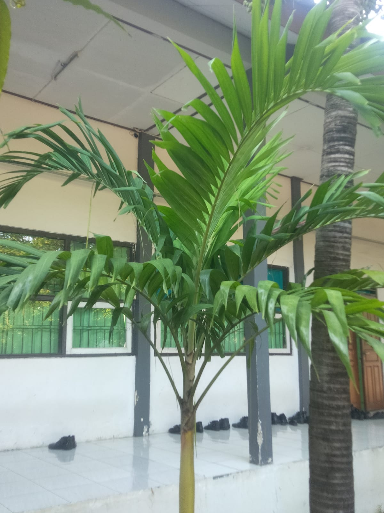

🌴 Tanaman Palem Kuning (Dypsis lutescens)

Identitas Tanaman
- Nama Umum: Palem Kuning
- Nama Ilmiah: Dypsis lutescens
- Famili: Arecaceae (Palem-paleman)
Klasifikasi Ilmiah
- Kerajaan: Plantae (Tumbuhan)
- Divisi: Tracheophyta (Tumbuhan berpembuluh)
- Kelas: Liliopsida (Monokotil)
- Ordo: Arecales
- Famili: Arecaceae (Palmae / Palem-paleman)
- Genus: Dypsis
- Spesies: Dypsis lutescens
Ciri-ciri Tanaman
- Batang: Tegak, ramping, berwarna kekuningan atau hijau kekuningan, tumbuh secara berumpun.
- Daun: Berbentuk majemuk, melengkung, panjang, dengan ujung yang runcing, berwarna hijau cerah.
- Akar: Akar serabut yang tumbuh menyebar di dalam tanah.
- Tinggi: Tanaman yang diamati memiliki tinggi sekitar 1–2 meter.
Manfaat Tanaman
- Digunakan sebagai tanaman hias di taman, halaman sekolah, atau rumah.
- Membantu memperbaiki kualitas udara di sekitar, karena mampu menyaring udara kotor.
- Memberikan kesan sejuk, asri, dan tropis pada lingkungan.